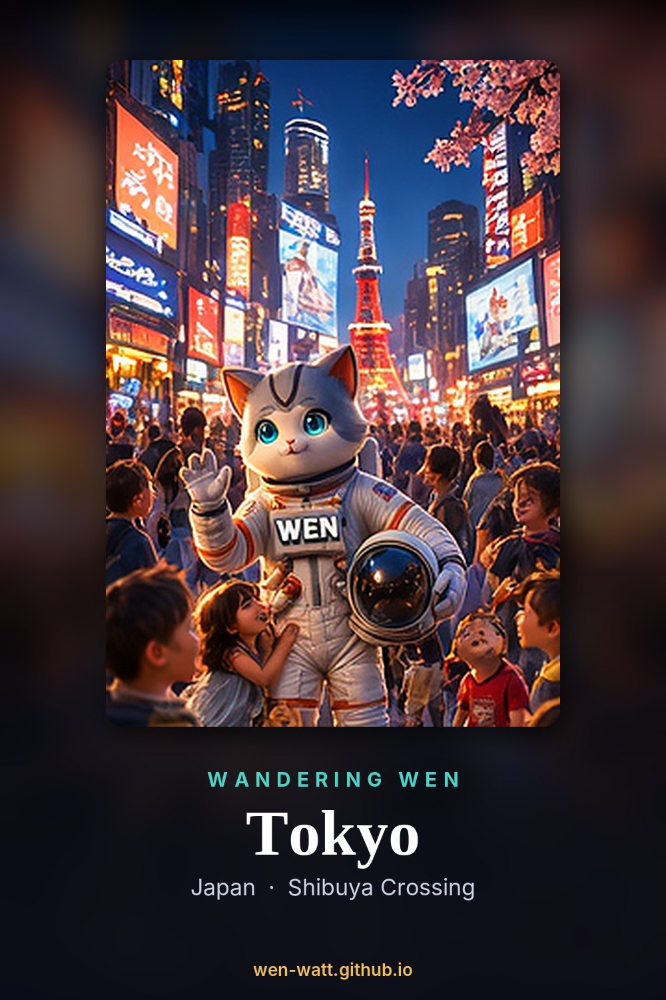

Wandering Wen in Tokyo

The city
Tokyo was once Edo, a small castle town that became the seat of the Tokugawa shoguns in 1603 and one of the largest cities in the world. It was renamed Tokyo, the eastern capital, in 1868. At Shibuya Crossing thousands of people cross at once, and somehow nobody bumps.
Solana here
Superteam Japan launched in May 2024 source. It organises SuperTokyo, the largest Solana conference in Japan source; the 2025 main conference in Shibuya listed Jupiter among its partners and more than a thousand people attended source.
Wen's note
An open NFT standard: WNS. WNS, proposed on January 25, 2024 by Ovols and Jupiter, keeps NFTs light: supply 1, decimals 0, metadata inside the mint, collections through group and member extensions. From the almanac →
Wherever Wen walks, the same check works: compare WEN with any Solana token, read from the chain itself.
WEN SAYS
Be patient. Roots first, then flowers.
Wen hero art made with AI image tools from the Wen character; the scene is imagined, the city is real. City history is general reference knowledge; Solana facts link to their sources. Texts CC BY 4.0. Not financial advice.